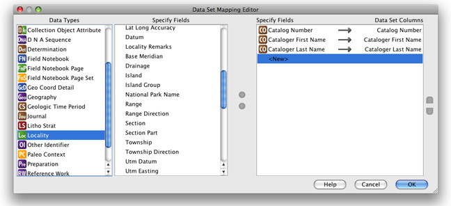

No Specify 6, pode-se criar um Conjunto de Dados WorkBench com base em um Conjunto de Registros do Specify. O conjunto de dados pode então ser exportado como uma planilha do Excel e importado para outro
bancos de dados do Specify.
Antes que um conjunto de registros possa ser convertido em um conjunto de dados, deve existir um mapeamento. Você pode reutilizar um mapeamento do conjunto de dados existente, nesse caso você pode ir diretamente para Criar um conjunto de dados a partir do conjunto de registros. Se um conjunto de dados
com um mapeamento duplicado não existe, então um mapeamento deve ser criado, criando também um
conjunto de dados vazio.
O novo título da coluna aparecerá em 'Especificar campos' e 'Colunas do conjunto de dados' (como
mostrado abaixo).
Um ícone de link, ( ),
confirma que o campo Especify está mapeado para a coluna Conjunto de dados.
),
confirma que o campo Especify está mapeado para a coluna Conjunto de dados.
Note: Um campo só pode ser mapeado uma vez. Os campos que forem
mapeado exibem uma marca de seleção verde, ao lado de seu nome na lista de campos Specify, confirmando
que estão em uso.
Note: Ao importar informações de Taxon, use apenas a Tabela Taxon Only
Tabela no editor de mapeamento.
Note: A tabela Agente, no editor de mapeamento, só pode ser usada
para informações do Agente. Ao fazer upload de informações do agente associadas a outras tabelas, use
a tabela apropriada como Catalogador, Determinador ou Coletor e seus respectivos
Campos.

Editor de mapeamento de conjunto de dados com três colunas adicionadas
Continue adicionando campos/colunas até que a lista "Colunas do conjunto de dados" esteja completa e clique em
'OK'.
Complete o novo conjunto de dados/mapeamento nomeando-o e descrevendo-o:

Prioridades do conjunto de dados
-
Clique em
Criar conjunto de dados a partir do botão Conjunto de Registros
-
Escolher conjunto de registros a partir da caixa de diálogo e selecionar o botão OK
A próxima caixa de diálogo listará os conjuntos de dados disponíveis.
Note: Se um Mapeamento não existir o processo irá parar e
nada mais acontecerá.
-
Escolha o conjunto de dados/mapeamento que precisa.
-
Clicar no botão 'OK'.
Na próxima caixa de diálogo, nomeie o novo conjunto de dados.
Nota: Os dados contidos em todos os registros, no conjunto de registros, serão
usado para preencher as colunas do conjunto de dados. Quando necessário, todos os dados em relacionamentos um-para-muitos será inserido nos campos relevantes. É importante incluir esses campos no mapeamento original e.g. se todos os registros no conjunto de registros tiverem dois coletores, é importante incluir colunas para Primeiro Nome, Sobrenome, iniciais do meio do nome, bem como nome do coletor 2, sobrenome, inicial do meio, para garantir
que todas as informações relevantes sejam preservadas para todos os registros.
Note: Quando o conjunto de dados é aberto, a validação para dados/campos inválidos
será ativada. Se o conjunto de dados tiver número de catálogo, eles serão marcados como
inválidos e destacados em vermelho, pois o Specify os reconhece como duplicados.
A validação pode ser desativada desmarcando a caixa de seleção Destacar células inválidas
no painel de validação na parte inferior da área de trabalho.